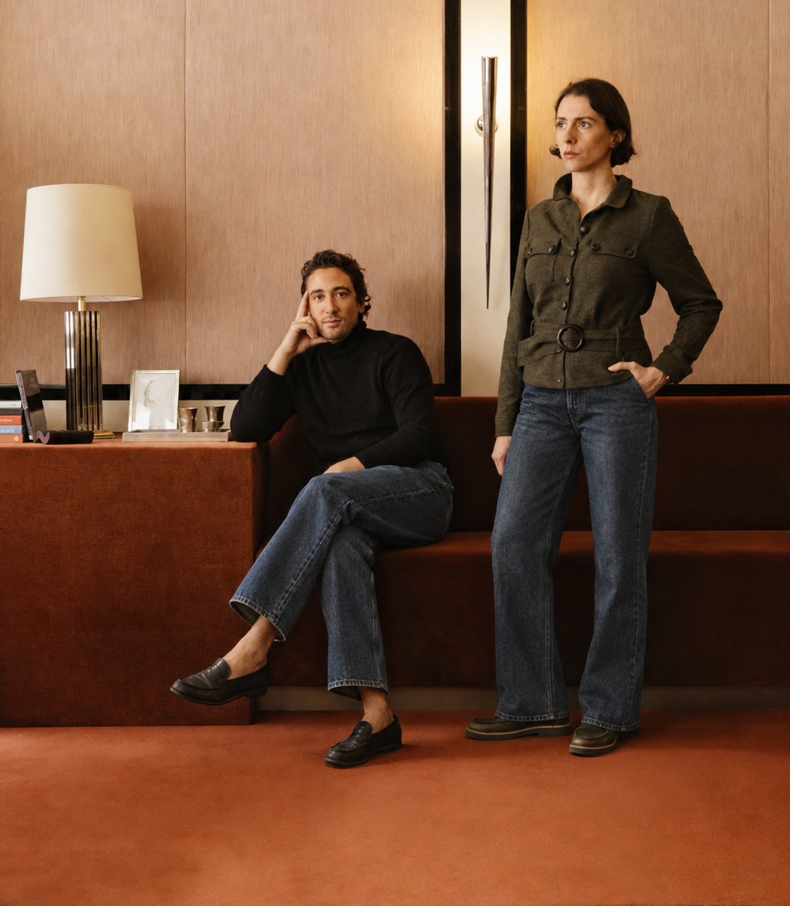
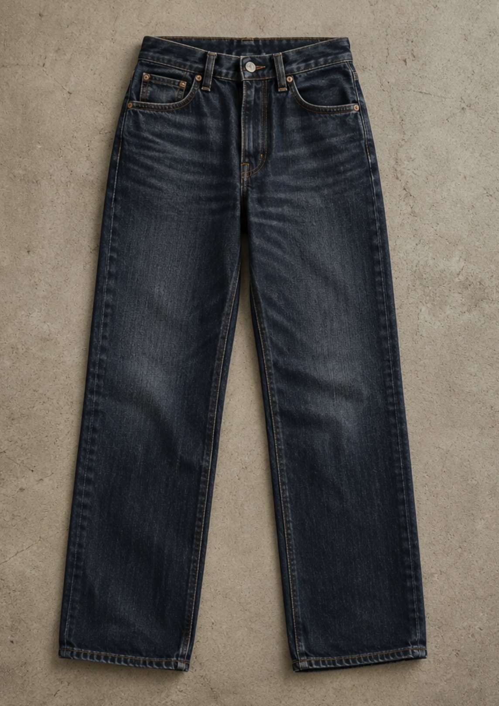
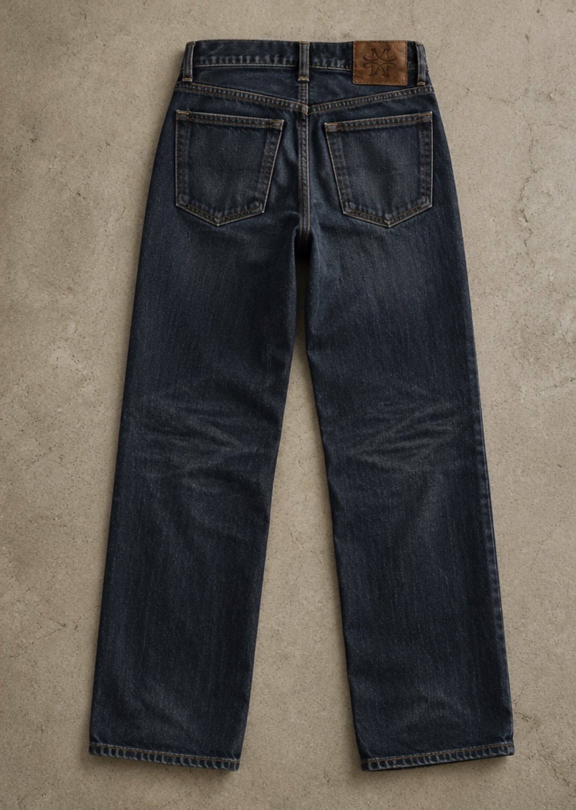

Modell 01
Eine Jeans. Gemacht, um zu bleiben.
Mehr entdeckenJapanischer Denim aus der Kuroki-Weberei, gefertigt in Italien. Ein Patch aus Cavallino, das Logo innen eingenäht, saubere Kontrastnähte. Wir machen nur eine Jeans – und konzentrieren uns ganz darauf, sie richtig zu machen.



moc
Modell 01
180 €
inkl. MwSt., zzgl. Versand
Gewebt in Japan von der Kuroki-Weberei, gefertigt in Italien. Gerade Passform, goldfarbene Kontrastnähte, ein Patch aus Cavallino und das moc-Logo innen eingenäht. Zeitlos genug für jeden Tag – und gemacht, um mit dir zu altern.
- Stoff
- Japanischer Denim, Kuroki
- Fertigung
- Italien
- Patch
- Cavallino (Ponyfell)
- Logo
- Innen eingenäht
Weite
Länge
Passform
Gerade geschnitten mit mittlerer Leibhöhe. Fällt normal aus – nimm deine gewohnte Größe. Unsicher? Schreib uns, wir beraten dich gern.
Material & Pflege
Japanischer Denim aus der Kuroki-Weberei, in Italien verarbeitet. Patch aus Cavallino (Ponyfell). Selten waschen – auf links, kalt und ohne Weichspüler – und an der Luft trocknen lassen. Den Patch nicht reiben oder bürsten.
Versand & Rückgabe
Versand innerhalb Deutschlands. Du hast 14 Tage Widerrufsrecht – Details findest du in der Widerrufsbelehrung.
Details
Das Wesentliche.


Kontakt
Fragen zur Größe oder Bestellung?
Schreib uns – wir antworten persönlich.
kontakt@example.com